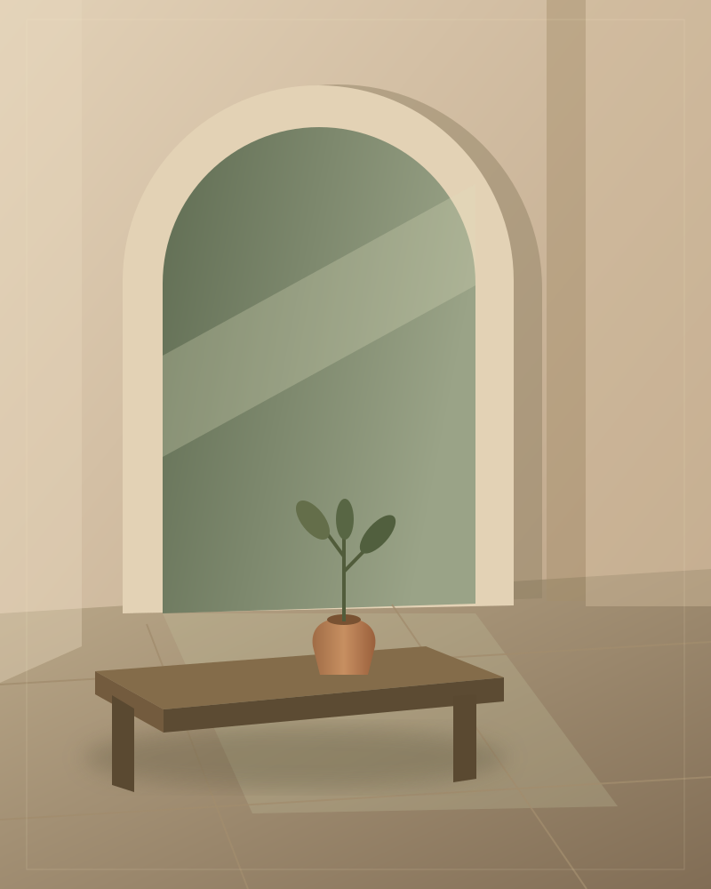

01
The quiet corner
Warm stone / natural light
THOUGHTFULLY COMPOSED. NATURALLY LIVED IN.
Quiet textures. Honest materials. Room for the way you actually live.
Explore the direction ↗01 / A CONSIDERED FIRST IMPRESSION
THE EVERYDAY, REIMAGINED.A SIMPLE PHILOSOPHY
A concept for a studio that believes a home should feel collected, not decorated. The design gives the spaces room to breathe—and the visitor a clear path to explore.
Warm stone / natural light
Clay / soft silhouettes
Timber / muted greens
BEHIND THE CONCEPT
This original design study explores an editorial layout, a warm material palette, responsive typography, and a clear visual story. The studio and spaces are fictional; the design and illustrations are original portfolio work.
Discuss your website with Rahul ↗